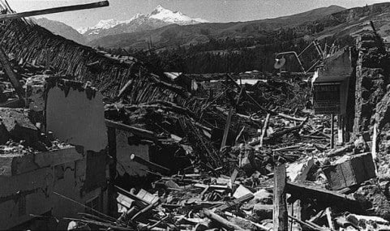
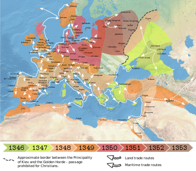

إعصار بولا 1970
إعصار بولا 1970 هو إعصار استوائي مدمر ضرب باكستان الشرقية (بنغلاديش الآن) وبنغال الغربية الهندية في 12 نوفمبر 1970. وهو أعنف الأعاصير الاستوائية التي سجلت على الإطلاق وواحد من الكوارث الطبيعية المميتة في الوقت الحاضر.
إعصار بولا 1970 هو إعصار استوائي مدمر ضرب باكستان الشرقية (بنغلاديش الآن) وبنغال الغربية الهندية في 12 نوفمبر 1970. وهو أعنف الأعاصير الاستوائية التي سجلت على الإطلاق وواحد من الكوارث الطبيعية المميتة في الوقت الحاضر.
زلزال كانتو الكبير 1923 (باليابانية: 関東大震災 كانتو-دايشينساي) هو زلزال ضرب منطقة كانتو في جزيرة هونشو الرئيسية في اليابان في الساعة 11:58:44 صباحاً من يوم 1 سبتمبر 1923.
كانت قوة الزلزال هي 8.3 درجات على مقياس ريختر ومركزه تحت إزو أوشيما في خليج ساغامي
كان الطاعون أحد أكثر الأمراض فتكًا في التاريخ ثم وجدنا علاجًا له انتشر المرض المعروف باسم الموت الأسود ،بسرعة لقرون مما أسفر عن مقتل الملايين.لا تزال العدوى البكتيرية تحدث ولكن يمكن علاجها بالمضادات الحيوية.يعد الطاعون أحد أكثر الأمراض فتكًا في تاريخ البشرية
إعصار بولا 1970 هو إعصار استوائي مدمر ضرب باكستان الشرقية (بنغلاديش الآن) وبنغال الغربية الهندية في 12 نوفمبر 1970. وهو أعنف الأعاصير الاستوائية التي سجلت على الإطلاق وواحد من الكوارث الطبيعية المميتة في الوقت الحاضر.
وهناك حوالي 500,000 شخص لقوا حتفهم، نتيجة ذلك الإعصار الذي غمرت فيضاناته الكثير من الجزر المنخفضة في دلتا نهر الغانج. ويعتبر هذا الإعصار هو سادس عاصفة مدارية لـ موسم الأعاصير الذي ضرب شمال المحيط الهندي 1970 والموسم الأقوى، حيث بلغت قوته ما يعادل قوة إعصار من الفئة الثالثة.
حدث هذا الإعصار على امتداد خليج البنغال الرئيسي في 8 نوفمبر وانتقل شمالاً ليتكثف مثلما فعل ذلك. وبلغ الإعصار ذروته حيث وصلت سرعة الرياح إلى 185 كم/ساعة (115 ميل/ساعة) في 12 نوفمبر وبلغ اليابسة من شواطئ باكستان الشرقية في هذه الليلة. وقد دمرت العاصفة القوية العديد من شواطئ الجزر وأباد القرى ودمر المحاصيل في جميع أنحاء المنطقة. ففي معظم التأثيرات الشديدة على أوبازيلا وتازومودين لقي ما يزيد عن 45% من السكان البالغ عددهم 167.000 حتفهم جراء هذه العاصفة.
في حين تعرضت الحكومة الباكستانية بقيادة مجلس القائد فريق أول يحيى خان لانتقادات شديدة اللهجة نتيجة تأخرها في عمليات الإغاثة أعقاب العاصفة، من جانب الزعماء السياسيين المحليين في باكستان الشرقية وفي وسائل الإعلام الدولية. وقد حقق حزب عوامي البنغالي المعارض الفوز بأغلبية ساحقة في المقاطعة واستمرت الاضطرابات بين باكستان الشرقية والحكومة المركزية لإثارة حرب التحرير البنغالية، التي أدت إلى الأعمال الوحشية التنكيلية الواسعة الانتشار والتي خلصت في نهاية المطاف إلى إنشاء دولة بنغلاديش. وكانت لهذه العاصفة الفضل إضافة إلى تسببها في نشوب حرب التحرير، في أنها كانت مصدر إلهام لعازف البيتلز السابق جورج هاريسون والمؤلف الموسيقي البنغالي رافي شانكار لتنظيم حفل موسيقي لبنغلاديش، حيث كان الغرض الرئيسي من إيراد الحفل هو جمع أموال للمساعدة، في عام 1971.
13 تشرين الثاني 1970: 500 الف قتيل في إعصار بولا الذي ضرب المناطق الساحلية في مدينة باكستان (بنجلاديش حالياً).
ودمّر الاعصار مناطق واسعة واقتلع عدة قرى من مكانها ثم اتجه شمالاً الى خليج البنغال، ليصبح أسوأ اعصار في التاريخ من حيث عدد القتلى.

أكبر زلزال في تاريخ اليابان بلغت قوته 7.9 درجة (زلزال كانتو العظيم) الذي وقع في الساعة 11:58 يوم 1 سبتمبر 1923 ، حيث امتد مركز الزلزال من وسط محافظة كاناغاوا إلى الجزء الشرقي من ساغامي نادا والطرف الجنوبي لنهر بوسو. شبه جزيرة. كارثة الزلزال. مركز الزلزال مطلوب عند خط طول 139.2 درجة شرقا وخط عرض 35.4 درجة شمالا في محافظة كاناغاوا الغربية ، وهو ما يتوافق مع الطرف الشمالي الغربي لمنطقة مركز الزلزال. تستند قيمة الحجم أعلاه إلى بيانات المراقبة اليابانية ، وحجم الموجة السطحية باستخدام البيانات من جميع أنحاء العالم هو 8.2. نتج هذا الزلزال عن حركة عكسية لخطأ يميل إلى الشمال الشرقي من حوض ساغامي. يُعتقد أن هذا الخطأ قد أصاب الواجهة بين الصفيحة الأوراسية والصفيحة الفلبينية التي تحفر تحتها من حوض ساجامي. رافق الزلزال حركات قشرية كبيرة في منطقة كانتو الجنوبية ، وتم رفع النصف الجنوبي من شبه جزيرة بوسو وشبه جزيرة ميورا وساحل خليج ساغامي بمحافظة كاناغاوا ، ووصل مقدار الارتفاع إلى 1.8 متر في طرف شبه جزيرة بوسو و 1.4 متر في شبه جزيرة ميورا. بالإضافة إلى ذلك ، يتمركز الجزء الغربي الأوسط من محافظة كاناغاوا حول جبل. تانزاوا ، أظهر هبوطًا أقصى يبلغ 80 سم. في الاتجاه الأفقي ، تحركت قشرة شبه جزيرة بوسو ومحافظة كاناغاوا إلى حوالي 5 أمتار إلى الجنوب الشرقي. هناك تقرير يفيد بأنه كان هناك ارتفاع 100 متر في قاع البحر في ساجامي نادا ، ولكن من الصعب التفكير في الفطرة السليمة الحالية لعلوم الأرض ، لذلك يُقال إنه قد يكون خطأ في القياس. بناءً على حركات القشرة الأرضية المصاحبة للزلزال والملاحظات التي أجرتها أجهزة قياس الزلازل حول العالم ، فإن أبعاد الصدع الذي تسبب في هذا الزلزال يبلغ طوله حوالي 100 كيلومتر وعرضه حوالي 50 كيلومترًا وحوالي 5 أمتار في الإزاحة وتمزق خطأ الطائرة حوالي 2 كم من الشمال الغربي إلى الجنوب الشرقي. يُعتقد أنه قد تقدم بسرعة / ثانية. في شبه جزيرة ميورا والجزء الجنوبي من شبه جزيرة بوسو ، ظهرت بعض الصدوع الصغيرة على سطح الأرض ، لكنها تعتبر ثانوية وليست السبب الرئيسي الذي تسبب في الزلزال.
شعر البشر بالزلزال من هاكوداته في الشمال إلى هيروشيما في الغرب ، لكن الضرر وقع في جميع محافظات كاناغاوا وطوكيو وتشيبا وسايتاما وياماناشي وشيزوكا ، وكذلك ناغانو وجونما وتوتشيغي. إنها جزء من المحافظة. على وجه الخصوص ، تم الوصول إلى شدة الزلازل 6 في محافظتي كاناغاوا وطوكيو ، في الجزء الجنوبي الشرقي من شبه جزيرة بوسو في محافظة تشيبا ، في الجزء الشرقي من محافظة شيزوكا ، وفي أجزاء من محافظتي ياماناشي وسيتاما. في ذلك الوقت ، لم تكن هناك طبقة ذات كثافة زلزالية قدرها 7 ، ولكن في الجزء الجنوبي من محافظة كاناغاوا والجزء الجنوبي الشرقي من شبه جزيرة بوسو ، تجاوز انهيار المنازل 30٪ ، وبالتالي فإن كثافة الزلازل الحالية هي 7. على الرغم من أن لم يكن حجم الزلزال نفسه من أكبر الزلازل ، فقد كانت الكارثة هائلة بسبب الأضرار التي لحقت بالمناطق المكتظة بالسكان ، وخاصة في طوكيو ويوكوهاما ، حيث قُتل 99331 وفقد 43476. ， دمرت المنازل بالكامل 128266 ودمرت جزئيا 126.233 وأحترقت 447128 وجرفت 868. العدد الإجمالي للقتلى والمفقودين 142807 منهم 107.519 في طوكيو و 33.067 في كاناغاوا و 2221 في محافظات أخرى. في طوكيو ويوكوهاما ، تم حرق 70٪ و 60٪ من جميع الوحدات على التوالي. بالإضافة إلى ذلك ، اندلعت الحرائق في مدن وبلدات مثل يوكوسوكا وكاماكورا وأوراغا وأتسوغي وهادانو ومانازورو. تم حرق معظم القتلى في طوكيو حتى الموت أو الموت بسبب الماء (لأنهم طاردتهم حريق ودخلوا النهر). احترق حتى الموت أو خنقته زوبعة. وانهارت معظم المنازل في محافظة كاناغاوا ودُمر أكثر من نصف المنازل بالكامل. في أوداوارا ، كاماكورا ، إلخ ، تجاوز معدل التدمير الإجمالي 50 ٪. في طوكيو ، كان هناك العديد من المنازل المنهارة في مناطق وسط المدينة مثل Honjo و Asakusa و Fukagawa و Shitamachi و Kanda ، لكن معدل الدمار الإجمالي للمنازل الخشبية كان الأعلى بنسبة 13 ٪ في Honjo-ku و Nihonbashi و Kyobashi و Yotsuya و Kojimachi هونغو. ， كان أقل من 1٪ في كل عنبر في كويشيكاوا. بالإضافة إلى ذلك ، ضرب تسونامي كبير ساحل خليج ساغامي من 2 إلى 10 أمتار ، وجرفت المياه 820 منزلاً. كانت هناك العديد من الانهيارات الأرضية ، وخاصة تدفق الحطام في نيبوكاوا بمحافظة كاناغاوا ، والتي صاحبتها كارثة كبرى.
لم يتم تسجيل أي هزات أرضية لهذا الزلزال ، ولم يتم رصد حركات قشرة تمهيدية ملحوظة مثل صعود وهبوط السواحل. ومع ذلك ، في العامين السابقين للزلزال ، كان هناك أربعة زلازل M 6.0 إلى 7.0 في منطقة جنوب كانتو ، مما تسبب في أضرار طفيفة ، لذلك يمكن القول أن النشاط الزلزالي قد زاد بشكل طفيف.
توكوجي أوتسو
الوضع الاجتماعي في ظل الزلزال
كان للحوادث التي وقعت في الاضطرابات التي سببها زلزال كانتو الكبير تأثير كبير على التقدم اللاحق لليابان. في اليابان ، التي تطورت بسرعة في الحرب العالمية الأولى ، انتشرت الحركات الشعبية مثل حركة الانتخابات العامة وحركة العمال والزراعة من أجل التحول الديمقراطي ، كما ظهرت حركات اشتراكية. مع مؤتمر واشنطن في العام السابق ، زادت نظريات نزع السلاح ، وسُحبت القوات من سيبيريا ومقاطعة شاندونغ بالصين ، وكان من المقرر إعادة توحيد اليابان مع الاتحاد السوفيتي. ومع ذلك ، مع انتشار حركة استعادة الحقوق الوطنية للصين وتزايد تأثير الأممية الشيوعية على حركات التحرر الوطني في الصين وكوريا ، عاد الجيش والقوميون. حاولت الحكومة سن قانون للسيطرة على الحركات الاجتماعية الراديكالية في العام السابق (1922) ولم تكتمل المداولات ، إلا بالنسبة للحزب الشيوعي الياباني الذي تشكل في يوليو من ذلك العام ، في مايو من هذا العام. قضية واسيدا للتعليم العسكري تم تنفيذ أول عملية اعتقال في أعقاب ذلك. كان هناك اتجاهان متنافسان: التكيف مع صعود الحراك الشعبي وتعزيز إعادة تنظيم النظام السياسي في اتجاه التحول الديمقراطي ، أو تعزيز التشريعات الأمنية ودق إسفين في الحراك الشعبي.
اجتاح الزلزال العظيم منطقة كيهين في اضطراب عظيم. وفي لحظة وقوع الزلزال ، انقطع الهاتف ودُمرت وسائل النقل وانقطعت المياه والكهرباء. في طوكيو ، شب حريق كبير في منطقة وسط المدينة بأكملها ، بما في ذلك جزء من منطقة مكاتب حكومة مارونوتشي ، واستمر الحريق حتى فجر اليوم الثالث. رغم اتساع المدينة الكبيرة بسبب اقتصاد الحرب ، إلا أن مخطط المدينة لم يتم تنفيذه ، واكتظت البيوت الخشبية ، وكانت الشوارع والحدائق ضيقة ، والأمتعة التي أحضرها النازحون أطلقت النار ، واحترقت العديد من الجسور الخشبية. إلخ زاد عدد الأشخاص المحروقين حتى الموت. توافد ما يقرب من 100000 ضحية على حديقة أوينو وساحة القصر الإمبراطوري ومتنزه هيبيا وما إلى ذلك ، وكان الوضع لا يُصدق. من ناحية أخرى ، في يوكوهاما ، دمرت المدينة بأكملها ولم تكن الإغاثة متوفرة منذ أيام.
في يوم الزلزال ، أثناء التغيير السياسي الناجم عن وفاة رئيس الوزراء توموسابورو كاتو ، كان وزراء مثل ميزونو رنتارو يتولون مناصبهم. كانوا خائفين من أعمال الشغب الشعبية بسبب تجربة أعمال شغب الأرز وحركة 1 مارس في كوريا. بدأ الجيش تأمين الطوارئ بعد وقت قصير من وقوع الزلزال ، وبعد ذلك بوقت قصير طلبت الحكومة إيفادهم. في اليوم الثاني ، انتشرت شائعات غزو الكوريين بسرعة ، وتم تطبيق بعض الأحكام العرفية في مدينة طوكيو والمقاطعات الخمس المحيطة بها. الشرطة والجيش في كل مكان اليقظة وصيد الكوريين ومجزرة ( قضية مذبحة كوريا ) وكان سبب. مباشرة بعد تطبيق الأحكام العرفية ، تم إنشاء مجلس الوزراء الثاني في Yamamoto Gonnohye. في اليوم الثالث ، تم توسيع منطقة الأحكام العرفية إلى محافظتي طوكيو وكاناغاوا ، ووصلت الانقسامات المحلية الواحدة تلو الأخرى. من خلال إعطاء الشعور بالأمن للأشخاص القلقين ، سعى الجيش لاستعادة السلطة. تصاعدت الهجمات على الاشتراكيين ، حادثة كاميدو حدث. بعد أن تبين أن أعمال الشغب الكورية كانت خدعة ، استمر الاشتراكيون في التحقيق في وقائع أعمال الشغب الكورية قدر الإمكان والإعلان عن التحريض من وراءها من أجل تبرير الإبادة الجماعية. تم تفتيشه. في السابع ، صدر مرسوم طوارئ "عقوبات لحفظ الأمن" وقمع بشدة الكلام. وهذا له معنى تشريع أمني ليحل محل مشروع قانون مراقبة الحركة الاجتماعية الراديكالية ، وتمت الموافقة عليه لاحقًا من قبل البرلمان الاستثنائي القادم. قانون حفظ السلام أصبح دفع الندى. في منتصف سبتمبر ، تم اتخاذ سياسة للإفراج التدريجي عن الأمن المباشر من قبل الجيش ونقله إلى الشرطة ، ولكن في ذلك ، كان الجيش الصيني الشاب المطلع والناشط الاجتماعي شيتيان وانغ يقتل والفوضوي ساكاي أوسوجي وآخرين. قتل حادثة أماكاسو استيقظ. تم منع الإبلاغ عن هذه الحالات ، وتم الإفراج عنها واحدة تلو الأخرى من خلال أنشطة مراسلي الصحف ، ولكن تم إخفاء الحقيقة. تم تقديم حادثة أماكاسو إلى محكمة عسكرية ، لكن حادثة كاميدو تم أخذها على أنها مسألة طبيعية بموجب الأحكام العرفية ، وكان Xitian Wang مفقودًا ، وتمت محاكمة عدد صغير من الحراس في قضية المذبحة الكورية. فقط تلك الجمل كانت خفيفة. لم يتم التشكيك في المسؤولية كجيش وشرطة ، وكان النقد والاحتجاج من قبل الرأي العام والجمهور ضعيفًا. من ناحية أخرى ، تم الترويج للدعاية والحرف اليدوية لتبرير الإبادة الجماعية ، وتم تعزيز التعتيم الإعلامي.
في المناخ المحافظ بعد الزلزال ، أيدت الطبقة الحاكمة "نظرية تينكن". كان الزلزال عقابًا ووصية للرفاهية والحرية بعد الحرب. ردًا على ذلك ، في 10 نوفمبر محضر الترويج الروحي الوطني صدر وتم الترويج للسيطرة الأيديولوجية للشعب. تم رفع الأحكام العرفية في 16 نوفمبر ، ولكن تم إنشاء قيادة أمن طوكيو وتم تعزيز Kempeitai بشكل كبير. بعد قمع الحركة الاشتراكية ، تم اعتقالهم واحدًا تلو الآخر لأسباب مثل تشكيل مجموعات الشباب الاشتراكي في جونما وناغانو جمعيات سرية. بالإضافة إلى الإرهاب الدموي تحت الزلزال ، صدمت عيون الشعب البيضاء الحركة الاشتراكية. في فبراير من العام التالي ، تم حل الحزب الشيوعي الياباني ، وأعلن اتحاد العمال الياباني أيضًا تغيير الاتجاه.
إعادة البناء والتغيير الاجتماعي
بلغت الأضرار المادية التي سببها زلزال كانتو العظيم 5،506 مليون ين في المجموع لمحافظة واحدة وست محافظات ، وهو ما يزيد ثلاثة أضعاف ونصف عن ميزانية الحساب العام للعام السابق. حسب الأصناف ، البضائع ، المصانع ، المخزونات ، المرافق الكهربائية ، السدود ، الطرق ، الجسور ، محطات المياه ، السفن ، الموانئ النهرية ، والصرف الصحي تتبع بهذا الترتيب ، مع منتجات تزيد قيمتها عن 2 مليار ين والمباني أكثر من 1.8 مليار ين. لا تشمل الأضرار أو تكاليف الإغاثة بسبب تعليق النشاط الاقتصادي. تبلغ نفقات الإغاثة للحكومة الوطنية 23 مليون ين ، و 37 مليون ين للتبرعات المحلية ، و 22 مليون ين للدول الأجنبية ، وما مجموعه 85 مليون ين بما في ذلك غيرها ، والتي تعتمد إلى حد كبير على التبرعات. أصدرت الحكومة تأجيلًا للدفع في 7 سبتمبر لمنع تعطل النشاط الاقتصادي. الوقف ) ، وبالنسبة للديون النقدية في المنطقة المتأثرة والمستحقة بحلول نهاية سبتمبر ، سيتم تأجيل السداد لمدة 30 يومًا باستثناء رواتب ودفعات الودائع التي تبلغ 100 ين أو أقل ، وسيتم تقديم القروض للبنوك بشروط سخية. أعيد فتح الأعمال. في السابع والعشرين من الشهر ، أصدر بنك اليابان أمرًا بتعويض خسارة الخصم على الفواتير المخصومة من قبل البنك قبل 1 سبتمبر ، وتمت إعادة خصم بنك اليابان ، وإذا تعرض بنك اليابان لخسارة ، فسيكون الحد 100 مليون ين. قررت الحكومة التعويض. بلغت قيمة فواتير الزلازل التي أعاد توزيعها بنك اليابان 430 مليون ين ، وأصبح نصفها تقريبًا معسرًا. الاكتئاب شوا تسببت. كان هناك بند في التأمين ضد الحريق يقضي بأننا لن ندفع ثمن الأضرار الناجمة عن الحريق الناجم عن الزلزال ، ولكن بما أنه كان غير مسبوق ، حدثت حركة للمطالبة بمطالبات التأمين وأصبحت مشكلة. لذلك ، بمساعدة الحكومة ، تم دفع دفعة تأمين صغيرة تبلغ حوالي 10 ٪ في مايو من العام التالي.
مباشرة بعد الزلزال ، كانت هناك نظرية لنقل العاصمة ، ولكن في 12 سبتمبر ، صدر مرسوم ملكي بشأن إعادة إعمار العاصمة الإمبراطورية ، وشينبي جوتو ، الذي كان قد وضع في السابق خطة إعادة تصميم رئيسية بقيمة 800 مليون ين. عمدة طوكيو ، كان لديه 4 مليارات ين. تم إنشاء خطة إعادة إعمار نموذجية ، وكانت هذه خطة لتنفيذ مشروع إعادة إعمار العاصمة الإمبراطورية ، بما في ذلك مدينة يوكوهاما ، مقابل 1.3 مليار ين ، باستثناء مشاريع الترميم الخاصة بالوكالات الحكومية المختلفة ، ولكن تم تخفيضها إلى 700 مليون ين. من قبل وزارة المالية. في مجلس إعادة إعمار العاصمة الإمبريالية ، الذي عقد بعد ذلك ، تم تخفيض المشروع إلى 570 مليون ين لمدة 6 سنوات بسبب معارضة المحافظين الذين يشددون على التسلح والإجراءات الريفية ، وتحمل كل من طوكيو ويوكوهاما أكثر من 100 مليون ين في مجلس غير عادي. لقد قيل. وبلغت تكلفة ترميم كل وزارة 700 مليون ين. على الرغم من تقليص خطة إعادة الإعمار بهذه الطريقة ، فقد تحسنت الطرق والحدائق في طوكيو ويوكوهاما بشكل ملحوظ مقارنة بما كانت عليه قبل الزلزال. بسبب تأثير الزلزال ، تراجعت التجارة والصناعة التقليدية القائمة في مناطق وسط المدينة ، وتطور تركيز رأس المال وترشيده من قبل الشركات الكبرى في ظل التقشف بعد الزلزال. في طوكيو ، تطورت منطقة المكاتب في مارونوتشي ومنطقة الضواحي السكنية في ياماتي بسرعة ، وأصبحت عصر عمال المكاتب. تم الانتهاء من طريق ياماتي الدائري وشبكة السكك الحديدية الخاصة التي تلت ذلك ، وتم تطوير مراكز فرعية مثل شينجوكو وشيبويا وإيكيبوكورو. تم بناء المصانع الكبيرة واحدة تلو الأخرى بشكل رئيسي في صناعة الكيماويات الثقيلة في الأراضي المستصلحة على شاطئ البحر في الجزء الجنوبي من كيهين ، وتم تطويرها كمنطقة صناعية كيهين. ومع ذلك ، فإن حقوق العمال ، مثل الحق في التنظيم والحق في الزراعة ، لم يتم ضمانها ، وتضاءل عدد العمال بأجر ، و <على الرغم من خروج الجامعة> عن أسفه. كانت الحياة العصرية لصغار المواطنين في الشوارع فقط ، وكانت "نعم" و "مورا" ، كأساس للبنية الوطنية المطلقة ، متجذرة في المنطقة. تطورت الثقافة الشعبية بشكل رئيسي في المدن الكبرى ، ولكن كان هناك ظل. في عام 1925 نشرت مجلة شهيرة 《 ملك تم نشره لأول مرة ، لكنه غمره الأخلاق الشعبية ، وتم إطلاق البث الإذاعي ، لكنه كان تحت إشراف صارم من الحكومة. حتى في عالم الصحف الذي ضربه الزلزال تقدمت هيمنة الصحف الكبرى وتسويق الصحف وتراجعت وظيفة النقد السياسي. كان زلزال كانتو العظيم بمثابة بداية لمجتمع جماهيري ثقيل.
ضرب الزلزال الجزء الجنوبي من كانتو في الساعة 11:58 يوم 1 سبتمبر 1923. وكان مركز الزلزال هو خليج ساجامي الأوسط ، الذي بلغت قوته 7.9 درجة. في الجزء السفلي من قاع البحر ، والذي يعتبر المنطقة الزلزالية ، هناك حد أقصى 160 متر للرفع والاكتئاب من 180 متر. في الأرض ، الارتفاع إلى ما بعد 2 متر في الجزء الجنوبي من شبه جزيرة بوسو ، والجزء الجنوبي من شبه جزيرة ميورا ، وخليج ساجامي ، وما إلى ذلك ، ينعكس الهبوط في جبال تانزوا ، وهكذا حدث انهيار أرضي. شينجوكو وياماناشي جميع المتضررين من الأضرار الناجمة عن الزلزال ، كان العدد الإجمالي للوحدات التي أحرقت وخسرت 216000 ، المتوفين / المفقودين 105 ألف ، السكان المتضررين 3.45 مليون ، وخاصة فقط في موقع مصنع للملابس في طوكيو قتل 30 ألف شخص و بلغ إجمالي حجم الكارثة أكثر من 5.5 مليار إلى 10 مليارات ين (تقرير مجموعة دراسة الوقاية من الكوارث). تعطلت مؤسسات النقل والاتصالات ، وتدفق خدعة ، وقعت اضطرابات اجتماعية. أصدر مجلس الوزراء في Yamamoto Ryohei قانونًا عسكريًا في طوكيو وكاناجاوا ، وأصدر أمرًا طارئًا ، وأمرًا بتطبيق الزواج ، وقيدًا للدفع ، وأصدر مذكرة كارثة ، لكن أزمة الكوارث كانت حتمية. بالإضافة إلى ذلك ، تم ذبح 6000 شخص مذبحة أخرى من أعمال الشغب الكورية ، مما تسبب في قضية كاميدو ، وهي حادثة كعكة حلوة .
يعد الطاعون أحد أكثر الأمراض فتكًا في تاريخ البشرية ، ويحتل المرتبة الثانية بعد الجدري. عدوى بكتيرية توجد بشكل رئيسي في القوارض والبراغيث المصاحبة لها ، يقفز الطاعون بسرعة إلى البشر على اتصال وثيق. تفشي الطاعون هو أكثر الأوبئة شهرة في التاريخ ، مما يثير مخاوف من استخدام الطاعون كسلاح بيولوجي.
اليوم ، لا تزال حالات الطاعون تظهر بشكل متقطع في جميع أنحاء العالم - بما في ذلك في الولايات المتحدة أو الصين ، حيث تم الإبلاغ عن حالة مشتبه بها مؤخرًا في منطقة منغوليا الداخلية. لكن المرض لم يعد مميتًا كما يمكن علاجه بالمضادات الحيوية عند توفرها.
إليك ما تحتاج لمعرفته حول الطاعون ، بما في ذلك كيفية انتشاره ، والفرق بين الطاعون الدبلي والطاعون الرئوي ، وأشهر أوبئة الطاعون في التاريخ ، ولماذا ليس من غير المعتاد رؤية الحالات الحديثة للمرض.
لمئات السنين ، ظل سبب تفشي الطاعون غامضًا ومحاطًا بالخرافات. لكن الملاحظات والتطورات الحادة في المجاهر ساعدت في النهاية في الكشف عن الجاني الحقيقي. في عام 1894 ، اكتشف الكسندر يرسين البكتيريا المسؤولة عن التسبب في الطاعون: يرسينيا بيستيس .
بكتيريا Y. pestis هي بكتيريا شديدة الضراوة على شكل قضيب. Y. pestis يعطل الجهاز المناعي لمضيفه عن طريق حقن السموم في الخلايا الدفاعية ، مثل الضامة ، المكلفة باكتشاف العدوى البكتيرية. بمجرد التخلص من هذه الخلايا ، يمكن للبكتيريا أن تتكاثر دون عوائق.
تعمل العديد من الثدييات الصغيرة كمضيف للبكتيريا ، بما في ذلك الجرذان والفئران والسنجاب وكلاب البراري والأرانب والسناجب. خلال دورة التكاثر ، يمكن أن ينتشر Y. pestis بمعدلات منخفضة بين مجموعات القوارض ، ومعظمها غير مكتشف لأنه لا يؤدي إلى تفشي المرض. عندما تنتقل البكتيريا إلى أنواع أخرى ، خلال دورة الوباء الحيواني ، يواجه البشر خطرًا أكبر للإصابة ببكتيريا الطاعون.
يُعتقد منذ فترة طويلة أن الفئران هي الناقل الرئيسي لتفشي الطاعون ، بسبب ارتباطها الوثيق بالبشر في المناطق الحضرية. اكتشف العلماء مؤخرًا أن البرغوث الذي يعيش على الفئران ، Xenopsylla cheopis ، يتسبب في المقام الأول في حالات الطاعون البشرية . عندما تموت القوارض من الطاعون ، تقفز البراغيث إلى مضيف جديد ، وتلدغها وتنقل Y. pestis . يحدث الانتقال أيضًا عن طريق التعامل مع الأنسجة أو الدم من حيوان مصاب بالطاعون ، أو استنشاق القطرات المصابة.
يشير الطاعون الدبلي ، وهو الشكل الأكثر شيوعًا للمرض ، إلى الدبلات المنبهة - العقد الليمفاوية المنتفخة بشكل مؤلم - والتي تظهر حول الفخذ أو الإبط أو الرقبة. تصبح تقرحات الجلد سوداء ، مما يؤدي إلى لقبها أثناء الأوبئة باسم "الموت الأسود". تشمل الأعراض الأولية لهذه المرحلة المبكرة القيء والغثيان والحمى.
يعد الطاعون الرئوي ، وهو النوع الأكثر عدوى ، مرحلة متقدمة من الطاعون ينتقل إلى الرئتين. خلال هذه المرحلة ، ينتقل المرض مباشرة ، من شخص لآخر ، من خلال جزيئات محمولة جواً تسعل من رئتي الشخص المصاب.
إذا لم يتم علاجه ، يمكن أن يتطور الطاعون الدبلي والطاعون الرئوي إلى طاعون إنتان الدم ، مما يؤدي إلى إصابة مجرى الدم. إذا تُرك دون علاج ، فإن طاعون الالتهاب الرئوي وتسمم الدم يقتل ما يقرب من 100 في المائة من المصابين .

الأوبئة الشائنة
حدثت ثلاثة أوبئة معروفة بشكل خاص قبل اكتشاف سبب الطاعون. كانت أول أزمة موثقة جيدًا هي طاعون جستنيان ، الذي بدأ في 542 بعد الميلاد ، سمي على اسم الإمبراطور البيزنطي جستنيان الأول ، وقتل الوباء ما يصل إلى 10000 شخص يوميًا في القسطنطينية (اسطنبول الحديثة ، تركيا) ، وفقًا للمؤرخين القدماء. تشير التقديرات الحديثة إلى أن نصف سكان أوروبا - ما يقرب من 100 مليون حالة وفاة - قد تم القضاء عليهم قبل أن ينحسر الطاعون في السبعينيات.
يمكن القول إن أكثر تفشي للطاعون شهرة كان ما يسمى بالموت الأسود ، وهو وباء متعدد القرون اجتاح آسيا وأوروبا. كان يُعتقد أنه بدأ في الصين عام 1334 ، وانتشر على طول طرق التجارة ووصل إلى أوروبا عبر موانئ صقلية في أواخر أربعينيات القرن الرابع عشر. قتل الطاعون ما يقدر بنحو 25 مليون شخص ، أي ما يقرب من ثلث سكان القارة. استمر الموت الأسود لقرون ، لا سيما في المدن. وشملت حالات تفشي الطاعون العظيم في لندن (1665-66) ، والتي مات فيها 70.000 من السكان.
لم يتم اكتشاف سبب الطاعون حتى تفشي المرض العالمي الأخير ، والذي بدأ في الصين عام 1860 ولم ينته رسميًا حتى عام 1959. تسبب الوباء في وفاة ما يقرب من 10 ملايين شخص . تم جلب الطاعون إلى أمريكا الشمالية في أوائل القرن العشرين عن طريق السفن ، ثم انتشر بعد ذلك إلى الثدييات الصغيرة في جميع أنحاء الولايات المتحدة.
أدى ارتفاع معدل الوفيات خلال هذه الأوبئة إلى دفن الموتى في كثير من الأحيان في مقابر جماعية محفورة بسرعة. من أسنان ضحايا الطاعون هؤلاء ، قام العلماء بتجميع شجرة عائلة Y. pestis ، واكتشفوا أن السلالة من طاعون جستنيان كانت مرتبطة بسلالات أخرى من الطاعون ولكنها متميزة عنها . ( اقرأ كيف انحدرت سلالات الطاعون الحديثة من سلالة نشأت أثناء وباء الموت الأسود .)
الطاعون في المجتمع الحديث
لا يزال الطاعون موجودًا في أجزاء مختلفة من العالم ، ويظهر بشكل متقطع وتتبعه بنشاط منظمة الصحة العالمية ومراكز السيطرة على الأمراض والوقاية منها . ظهرت معظم الحالات في إفريقيا منذ التسعينيات.
بين عامي 2004 و 2014 ، أبلغت جمهورية الكونغو الديمقراطية عن غالبية حالات الطاعون في جميع أنحاء العالم ، مع 4630 إصابة بشرية و 349 حالة وفاة. يربط العلماء انتشار الطاعون في جمهورية الكونغو الديمقراطية بالنظام البيئي - المناخ الاستوائي الجبلي في المقام الأول. في الآونة الأخيرة ، انتشر الطاعون في مدغشقر في عام 2017 ، مما تسبب في أكثر من 2300 حالة.
الولايات المتحدة والصين والهند وفيتنام ومنغوليا من بين الدول الأخرى التي أكدت حالات الطاعون البشري في السنوات الأخيرة. داخل الولايات المتحدة ، تظهر سبع حالات إصابة بشرية بالطاعون في المتوسط كل عام ، وتظهر بشكل أساسي في كاليفورنيا والجنوب الغربي.
اليوم ، ينجو معظم الناس من الطاعون بالتشخيص السريع والعلاج بالمضادات الحيوية . تقلل ممارسات الصرف الصحي الجيدة ومكافحة الآفات من الاتصال بالبراغيث والقوارض المصابة للمساعدة في منع أوبئة الطاعون.
يُصنف الطاعون على أنه أحد مسببات الأمراض من الفئة (أ) ، لأنه ينتقل بسهولة بين الناس ويمكن أن يؤدي إلى معدلات وفيات عالية إذا لم يتم علاجه. ساعد هذا التصنيف في إثارة المخاوف من إمكانية استخدام Y. pestis كسلاح بيولوجي إذا تم توزيعه في شكل رذاذ. كجسيمات صغيرة محمولة جواً ، من شأنها أن تسبب الطاعون الرئوي ، وهو الشكل الأكثر فتكًا ومعدًا.
من مخاوف الحفظ ، تتعاقد القوارض ذات الأرجل السوداء المهددة بالانقراض فيدراليًا بشكل آخر من الطاعون ، الطاعون السلفي ، من كلاب البراري القريبة. يمكن أن يقضي الطاعون على مجموعات كلاب البراري ، والتي تعد مصدرًا غذائيًا مهمًا للقوارض ذات الأقدام السوداء. بدأ العلماء في إعطاء لقاح لمنع تفشي الطاعون في كلاب البراري والقوارض سوداء القدمين.